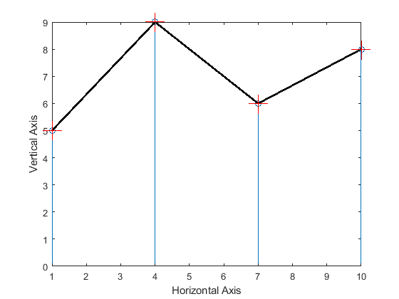
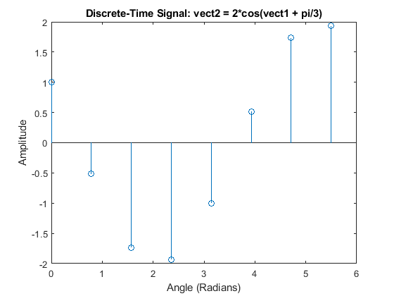
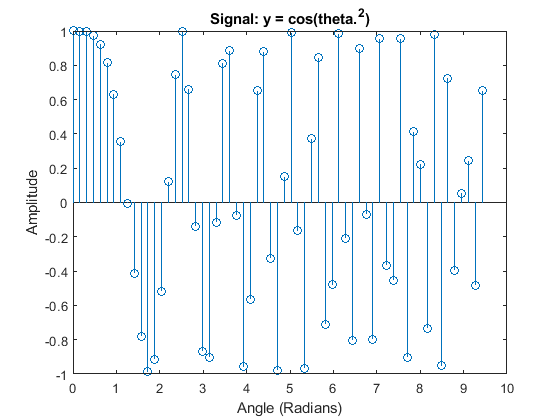
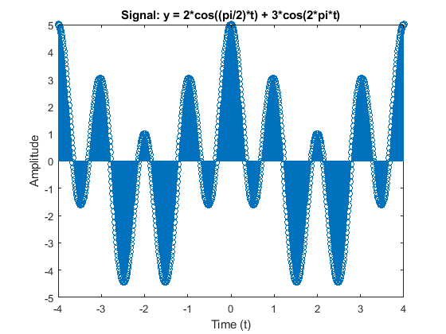

Contents
PREAMBLE
DO NOT REMOVE THE LINE BELOW
clear;
QUESTION 1: COMMENTING
=======================
% Copy and comment every line of the following MATLAB script. Say what % each line is doing in your comment. Explain each MATLAB line by using % no more than one comment line, as done in the first line below. Run and % publish the script: a=zeros(1,10) % Generate and print a 1x10 row vector of zeros b=ones(4,2) % Generate and print a 4x2 matrix of ones c= size(b); % Gets size of matrix b and returns the dimensions in a vector abs([-2.2 , 3]) % Calculates the absolute value of each element in the array [-2.2, 3] floor(1.6) % Rounds down the value of 1.6 to the nearest integer d=[1:-2.5:-9]; % Creates a row vector starting at 1, with steps of 2.5, until 9 f=d(2); g=sin(pi/2); % Extracts the second element of d and computes sine of pi/2 (sine(pi/2) = 1) K=[1.4, 2.3; 5.1, 7.8]; % Creates a 2x2 matrix with specified values m=K(1,2); % Extracts first row of K matrix n=K(:,2); % Extracts second column of K matrix p=K(1,2); % Extracts element in first row and second column of K comp = 10+40i; % Creates a complex number with real part 10 and imaginary part 40 real(comp) % Extracts the real part of the complex number comp imag(comp) % Extracts the imaginary part of the complex number comp abs(comp) % Calculates the absolute value (magnitude) of the complex number comp angle(comp) % Calculates the phase angel (in radians) of the complex number comp disp('haha, MATLAB is fun'); % Displays the string "haha, MATLAB is fun" in th ecommand window 3^2 % Calculates 3 raised to the power of 2 4==4 % Checks if 4 is equal to 4 [2==8 3~=5] % Checks if 2 is equal to 8, and if 3 is not equal to 5, returns [false true] x=[1:3:10]; % Creates a row vector starting at 1, with steps of 3, until 10 y=[5 9 6 8]; % Creates a row vector with the specified values tic; pause(0.2); toc % Measures the elapsed time for a pause of 0.2 seconds q = zeros(10,1); % Creates a 10 x 1 column vector filled with zeros for ii = 1:10 % Starts a loop from ii = 1 to 10 q(ii) = ii^2; % Assigns the square of ii to the ii-th element of q end % Ends the loop figure(129); % Creates a figure window with the ID 129 stem(x,y) % Creates a stem plot of x versus y hold on; % Holds the current plot so that the new plots can be added plot(x,y, 'k', 'linewidth', 2) % Plot x versus y with a black line of width 2 plot(x,y,'+r', 'markersize', 20); % Plot x versus y with red plus markers of size 20 hold off; % Releases the hold on the current plot xlabel('Horizontal Axis') % Labels the x-axis as "Horizontal Axis" ylabel('Vertical Axis') % Labels the y-axis as "Vertical Axis"
a =
0 0 0 0 0 0 0 0 0 0
b =
1 1
1 1
1 1
1 1
ans =
2.2000 3.0000
ans =
1
ans =
10
ans =
40
ans =
41.2311
ans =
1.3258
haha, MATLAB is fun
ans =
9
ans =
logical
1
ans =
1×2 logical array
0 1
Elapsed time is 0.211086 seconds.
 QUESTION 2: PLOTTING
=======================
2(a) PLOT RESULT
% Given vect1 = [0 pi/4 2*pi/4 3*pi/4 4*pi/4 5*pi/4 6*pi/4 7*pi/4]; % Angle values vect2 = 2*cos(vect1 + pi/3); % Discrete-time signal % plot using stem stem(vect1, vect2) % Plot vect2 as discrete-time signal xlabel('Angle (Radians)') % Label x-axis ylabel('Amplitude') % Label y-axis title('Discrete-Time Signal: vect2 = 2*cos(vect1 + pi/3)') % Title of the plot
2(b) PLOT RESULT
% Given theta = 0 : pi/20 : 3*pi; % Angle ranges 0 to 3*pi with step size pi/20 y = cos(theta.^2); % Discrete-time signal % plot using stem stem(theta, y) % Plot y versus theta xlabel('Angle (Radians)') % Label x-axis ylabel('Amplitude') % Label y-axis title('Signal: y = cos(theta.^2)') % Title of the plot
2(c) PLOT RESULT
% Given t = -4 : 0.01 : 4; % Time ranges between -4 <= t <= 4, with step size 0.01 y = 2*cos((pi/2)*t) + 3*cos(2*pi*t); % Signal equation % plot using stem stem(t, y) % Plot y versus t xlabel('Time (t)') % Label x-axis ylabel('Amplitude') % Label y-axis title('Signal: y = 2*cos((pi/2)*t) + 3*cos(2*pi*t)') % Title of the plot
QUESTION 3: COMPLEX ROOTS
=======================
3(a) WRITE FUNCTION IN SEPARATE FILE (TEMPLATE PROVIDED)
type('myroots.m')
function r = myroots(n, a)
% myroots: Find all the nth roots of the complex number a
%
% Input Args:
% n: a positive integer specifying the nth roots
% a: a complex number whose nth roots are to be returned
%
% Output:
% r: 1xn vector containing all the nth roots of a
% Converting to polar
A = abs(a); % Magnitude of coomplex number
phi = angle(a); % Argument (phase) of a
% nth root
roots = zeros(1,n); % Initializes vector to stores the roots
for k = 0 : n-1; % loops through n times
% Formula for nth root
r(k+1) = (A^(1/n)) * exp(1i * (phi + 2*pi*k)/n); % r(k+1) is nth root (MATLAB starts from 1)
end
end
3(b) ANSWER QUESTION
% The command "help myroots" gives an explanation of what the root does, % what inputs are needed, and what the outputs are. Essentially, it has the % same description as the comments at the top in the myroots.m file. The % purpose of this command would help to define a function does, what the % proper inputs for the function are, and how the function outputs the % information. This would be useful for debugging in otder to figure out if % there is a problem with the way prior code is inputing information, and % how it is handling the output after the function use.
3(c) OUTPUT RESULTS
% Calculate 5th root of -1 a1 = -1; % Defines a = -1, or defines what we are finding the root of root1 = 5; % Defines the root number root_a1 = myroots(root1,a1); % Creates the function to calculate the root disp(root_a1); % Displays the root % Calculates the 11th root of 2048j a2 = 2048 * 1i; % Defines a = 2048j, since i is imaginary root2 = 11; % Defines the root number root_a2 = myroots(root2,a2); % Calls the function to calcluate the root disp(root_a2); % Displays the root
Columns 1 through 4 0.8090 + 0.5878i -0.3090 + 0.9511i -1.0000 + 0.0000i -0.3090 - 0.9511i Column 5 0.8090 - 0.5878i Columns 1 through 4 1.9796 + 0.2846i 1.5115 + 1.3097i 0.5635 + 1.9190i -0.5635 + 1.9190i Columns 5 through 8 -1.5115 + 1.3097i -1.9796 + 0.2846i -1.8193 - 0.8308i -1.0813 - 1.6825i Columns 9 through 11 -0.0000 - 2.0000i 1.0813 - 1.6825i 1.8193 - 0.8308i